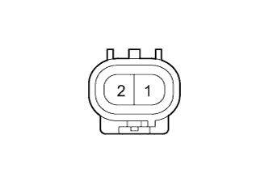

GLASS HATCH OPENER SYSTEM > Glass Hatch Opener System does not Operate |
| 1.READ VALUE USING INTELLIGENT TESTER (BACK DOOR COURTESY LIGHT SWITCH ASSEMBLY) |
Use the Data List to check if the back door courtesy light switch is functioning properly (Click here).
| Tester Display | Measurement Item/Range | Normal Condition | Diagnostic Note |
| Back Door Courtesy SW | Back door courtesy switch signal / ON or OFF | ON: Back door open OFF: Back door closed | - |
|
| ||||
| OK | |
| 2.CHECK ENTRY AND START SYSTEM (for Entry Function) |
When the back door entry lock switch is operated, check that the glass hatch opens.
|
| ||||
| OK | |
| 3.READ VALUE USING INTELLIGENT TESTER (GLASS HATCH OPENER SWITCH) |
Use the Data List to check if the glass hatch opener switch is functioning properly (Click here).
| Tester Display | Measurement Item/Range | Normal Condition | Diagnostic Note |
| Glass Hatch Opener Switch | Glass hatch opener switch signal / ON or OFF | ON: Glass hatch opener switch operated OFF: Glass hatch opener switch not operated | - |
| Result | Proceed to |
| Glass hatch opener switch does not operate | A |
| Glass hatch opener switch operates | B |
|
| ||||
| A | |
| 4.INSPECT GLASS HATCH OPENER SWITCH ASSEMBLY |
|  |
Remove the glass hatch opener switch (Click here).
Measure the resistance according to the value(s) in the table below.
| Tester Connection | Switch Condition | Specified Condition |
| 1 - 2 | Switch not pushed | 10 kΩ or higher |
| 1 - 2 | Switch pushed | Below 1 Ω |
|
| ||||
| OK | |
| 5.CHECK HARNESS AND CONNECTOR (GLASS HATCH OPENER SWITCH ASSEMBLY - MAIN BODY ECU AND BODY GROUND) |
Disconnect the X3 glass hatch opener switch connector.
Disconnect the G46 main body ECU connector.
Measure the resistance according to the value(s) in the table below.
| Tester Connection | Condition | Specified Condition |
| X3-2 - G46-17 (GOSW) | Always | Below 1 Ω |
| X3-1 - Body ground | Always | Below 1 Ω |
| X3-2 - Body ground | Always | 10 kΩ or higher |
|
| ||||
| OK | ||
| ||
| 6.PERFORM ACTIVE TEST USING INTELLIGENT TESTER (GLASS HATCH OPEN) |
Using the intelligent tester, perform the Active Test (Click here).
| Tester Display | Test Part | Control Range | Diagnostic Note |
| Glass Hatch Open | Operate Glass Hatch | ON/OFF | - |
|
| ||||
| OK | ||
| ||
| 7.INSPECT BACK WINDOW LOCK ASSEMBLY |
Remove the back window lock (Click here).
 | Moves to Open Position | - | - |
Move the back window lock to the lock position.
Apply battery voltage and check the operation of the window door lock motor.
| Measurement Condition | Specified Condition |
| Battery positive (+) - Terminal 3 (+) | Opens |
| Battery negative (-) - Terminal 4 (-) |
|
| ||||
| OK | |
| 8.CHECK HARNESS AND CONNECTOR (BACK WINDOW LOCK ASSEMBLY - MAIN BODY ECU AND BODY GROUND) |
Disconnect the X4 back window lock connector.
Remove the main body ECU (Click here).
Measure the resistance according to the value(s) in the table below.
| Tester Connection | Condition | Specified Condition |
| X4-3 (+) - 2H-9 (GHRY) | Always | Below 1 Ω |
| X4-4 (-) - Body ground | Always | Below 1 Ω |
| X4-3 (+) - Body ground | Always | 10 kΩ or higher |
|
| ||||
| OK | |
| 9.REPLACE DRIVER SIDE JUNCTION BLOCK ASSEMBLY |
Temporarily replace the driver side junction block with a new or normally functioning one (Click here).
Check that the glass hatch opener function operates normally.
|
| ||||
| OK | ||
| ||